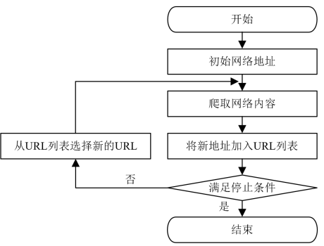
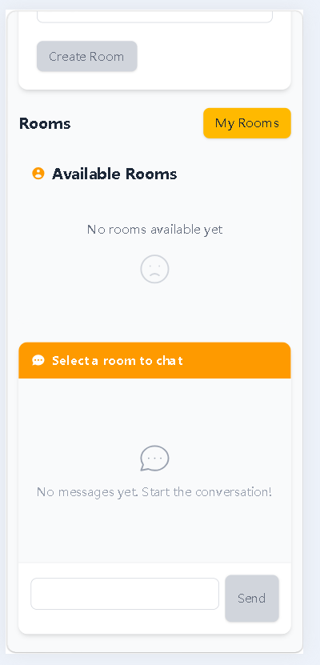
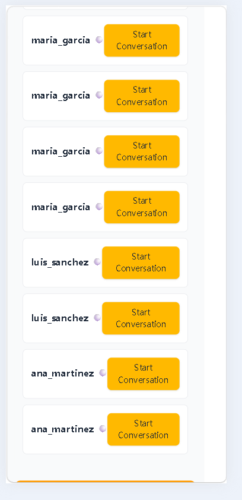
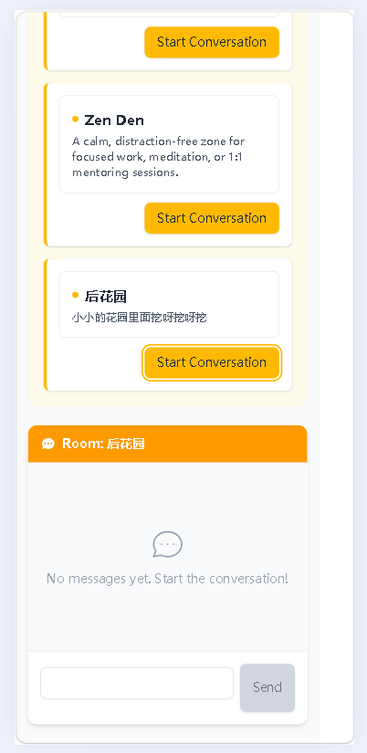
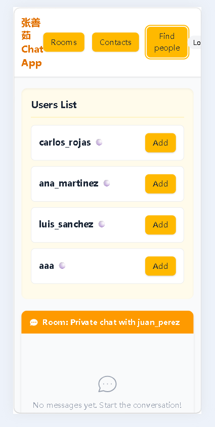
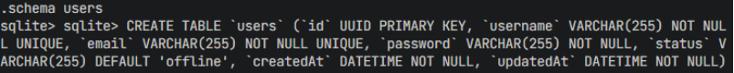
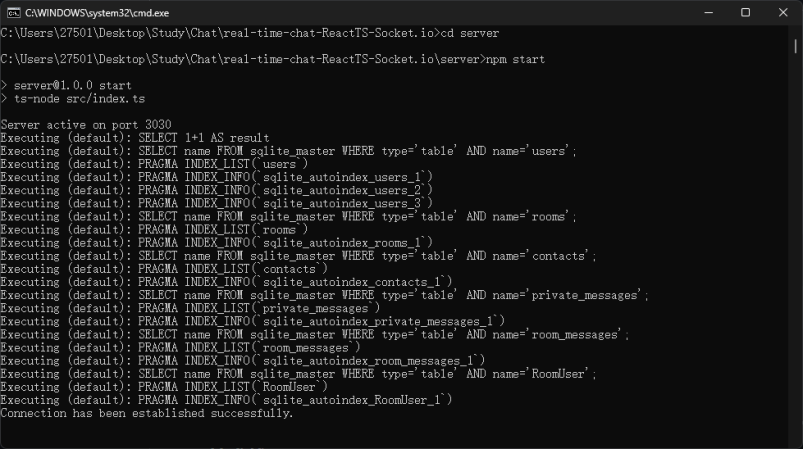
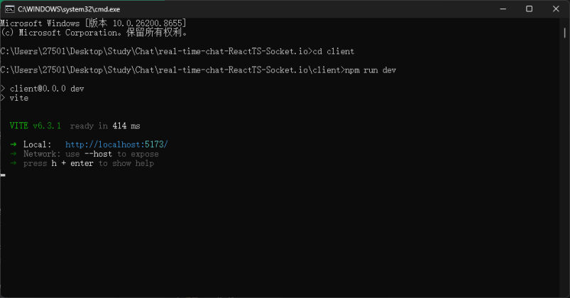

《移动终端程序设计》结课论文要求
1.1 整体要求
运用所学的移动开发技术内容实现指定问题，并提交相应的说明文档。
作业选题：完成Android、IOS、小程序、公众号的一个应用，原生、H5、混合开发均可，应包括前后端、数据持久化存储（数据库）的应用。
针对提交的程序，提供一份程序的说明文档，对程序的功能、使用进行的介绍，必要时可配合代码进行说明。
1.2 具体要求
1. 界面要求：美观，友好，具备一定设计美感（20分）；
2. 功能要求：基本功能实现，功能比较完善（20分）；
3. 对数据的持久化保存方式：使用数据库（20分）；
4. 代码要求：书写规范，结构合理，结合必要的注释（20分）；
5. 文档要求：内容详细，结构合理，格式正确（20分）。
注意：有下列情形之一，均判为不及格：
1. 选题完全不符合本课程基本要求，严重偏题；
2. 完全抄袭他人成果；
3. 论文层次结构混乱，逻辑不清，文字表达严重条理不清；
4. 撰写格式严重不满足规范要求。
移动终端程序设计结课报告
班 级： | |
学 号： | |
姓 名： |
序号 | 要求 | 得分 |
1 | 界面要求：美观，友好，不能过于粗糙，具备一定设计美感（20分） | |
2 | 功能要求：基本功能实现，需要可以对功能进行扩充（20分） | |
2 | 对数据的持久化保存方式：可以使用文件，也可以使用数据库（20分） | |
4 | 代码要求：书写规范，结构合理，结合必要的注释（20分） | |
5 | 文档要求：内容详细，结构合理，格式正确（20分） | |
合计 | ||
评阅人：
日期：
东北大学秦皇岛分校计算机与通信工程学院
1. 章标题
1.1 节标题
1.1.1 条标题
1.款
（1）项
正文文字要求为：中文使用宋体，英文及数字使用Times New Roman，字号为小四，段落行距为1.5倍，段前段后间距均为0行，首行缩进两字符。
表格要求为：按章节排序，如“表 1.1”，表名位于表格上方，采用五号宋体，居中。表内文字：五号宋体或Times New Roman，数值右对齐，文字左对齐。采用三线表，线宽0.5磅。表内文字行距固定值18磅，格式要求如表1.1所示。
表 1.1章节条款项格式示例表
层级 | 编号示例 | 格式示例 | 段落格式 |
章 | 1 章 | 三号黑体，加粗，左对齐 | 段前段后 0.5 行 |
节 | 1.1 | 四号宋体，加粗，左对齐 | 段前段后 0.5 行 |
条 | 1.1.1 | 小四号宋体，左对齐 | 段前段后 0.5 行 |
款 | 1. | 缩进 2 字符，小四号宋体 | 固定值 20 磅 |
项 | （1） | 缩进 2 字符，小四号宋体 | 固定值 20 磅 |
图的要求为：按章节排序，如“图1.1”，图名位于下方，使用五号宋体，居中，中文使用五号宋体，英文及数字使用五号Times New Roman。线条清晰，标注完整，数值与单位对齐，推荐使用矢量格式。图与图题为一整体，不得拆开排写于两页。如图1.1所示。

图1.1 通用网络爬虫的工作流程
算法的要求：按章节编号，如 “算法 1.1”，宋体，采用伪代码形式，中文使用宋体，英文使用Times New Roman，字号为五号，段落行距1.5倍。算法步骤需清晰明确，逻辑连贯。如算法1.1所示。
算法1.1 主动搜索算法
输入： 输出： 1: 2: return |
代码的要求:按章节编号，如 “代码 1.1”，宋体/Times New Roman，严格缩进，段落行距1.5倍。代码需添加必要注释，说明关键逻辑和功能。
代码清单1.1 添加年级功能
1.public void add(String grade, HttpServletResponse response) { |
2. JSON json = new JSONObject(); |
3. //必要注释 |
3. DataUtil.writeJSON(json, response); |
4.} |




数据库界面

后端界面：

